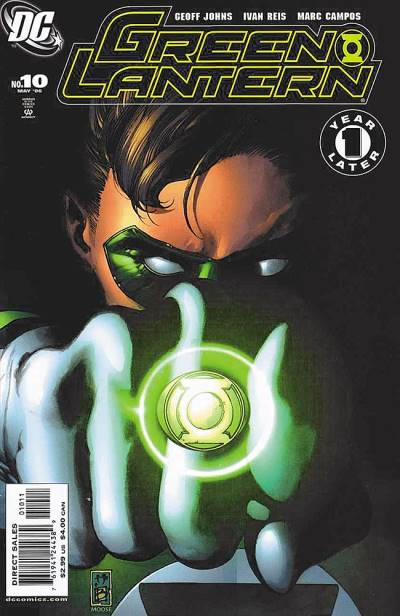

No decorrer da jornada de Kyle Rayner como lanterna, muitas vezes ele se encontrou com Hal Jordan (Parallax). Seja em batalhas, viagens no tempo ou grande sagas, a questão é que o contraponto dos dois personagens sempre gerava histórias incríveis que incrementavam o volume da revista.
Escrita por Karl Kesel e desenhada por Stuart Immonen, em Noite Final uma criatura chamada "Devorador de Sóis" se aproxima de nosso Sol e suga sua energia. Como reação, a estrela irá entrar em Nova. Com alguns dos heróis incapacitados, principalmente o Superman - que enfraquece com a falta de energia solar - a única esperança de salvação acaba repousando nas mãos de... Parallax! É isso mesmo, o vilão ex-herói acaba sendo o único ser poderoso o bastante para deter o Devorador de Sóis. Mas a que custo? É nessa saga que ocorre o famoso sacrifício da Hal Jordan para manter o sol aceso.


Com o sacrifício de Hal Jordan nos eventos da Noite Final, o antigo patrulheiro esmeralda se torna o Espírito da Vingança do universo DC. Tornando-se ainda mais poderoso e onipresente, o espectro foi a maneira de manter Hal presente nas histórias, mesmo após sua morte.
.jpeg)
Neste ponto, é aqui onde pode-se iniciar a leitura de Hal Jordan, sendo uma grannde recomendaç'ao para novos leitores. O arco de histórias é escrito por Geoff Johns e desenhado por Ethan Van Sciver. A história começa com Hal Jordan sendo ressuscitado e se tornando o Lanterna Verde novamente, após os eventos da Noite Final, e deixando o Espectro para trás. O arco de histórias é uma ótima introdução ao personagem e ao universo dos Lanternas Verdes, além de apresentar novos vilões e aliados.
Hal Jordan foi ressuscitado e redimido. Agora é hora de continuar sua vida como Lanterna Verde, protetora do setor espacial 2814. Mas mesmo quando ele volta aos céus como piloto da Força Aérea, Jordan enfrenta novas ameaças de seus antigos inimigos. Os androides mortais, Caçadores Cósmicos, e o Tubarão mutante retornam com violência chocante, mas são apenas precursores de grandes perigos. Um Mão Negra enlouquecido embarca em uma fúria assassina, assim como o próprio Lanterna se vê objeto do plano insidioso de uma raça alienígena para colher seres humanos como armas vivas para a guerra. Hal Jordan está de volta, mas está sendo testado de maneiras que nunca imaginou.
Depois do Retorno de Hal Jordan, os Guardiões do Universo resolveram retomar a Tropa dos Lanternas Verdes, recrutando novos membros por todos os cantos do Universo! Em boa hora aliás: uma guerra devastadora entre Rann e Tanaghar divide boa parte da galáxia, e há aqueles que querem lucrar com o confronto. Acompanhe a história completa da retomada de atividades da Tropa dos Lanternas Verdes, na mini-série de grande sucesso que acabou levando ao lançamento de uma revista própria para a Tropa. Roteiro de Geof Johns e Dave Gibbons, com desenhos de Patrick Gleason.
Aqui está um grande evento importante, e mesmo já falando dela outras vezes, vou contar o porque é importante para as HQs do Lanterna Verde, nessa saga, o Superboy Primordial e Alexander Luthor querem recriar a Terra perfeita, pois a atual (Nova Terra, criada após a Crise) estava uma porcaria, o Superman matou, morreu, o Batman quebrou a coluna, Mulher-Maravilha assassinou Maxwell Lord, Hal Jordan matou quase a Tropa toda... Então, resumindo, Alexander na tentativa falha de recriar a Terra Perfeita, é interrompido durante a batalha de Superboy contra Superboy Primordial que acabam destruindo a máquina que tinha o Antimonitor. Superboy morre, o Primordial ainda vive, então Superman e Superman da Terra-2 vão atrás dele, eles passam por um sol vermelho e caem em Mogo, então Superboy mata o Superman da Terra-2 e é impedido pelo Superman. Superboy é então aprisionado em uma prisão dentro de um sol vermelho em Oa e supervisionado por Lanternas Verdes a todo instante.

O Lanterna Verde Hal Jordan – responsável pelo setor espacial 2814 – tem muito a expiar. Possuído por uma entidade alienígena, Jordan outrora desmantelou a tropa dos lanternas verdes inteira, matando muitos companheiros no processo. Agora ele reconquistou a confiança de seus amigos e aliados e está reconstruindo sua vida como membro da tropa, defensor da Terra e ser humano. Porém, o destino não quer deixar Hal se afastar de seu passado. Os Lanternas Verdes que ele julgava ter matado podem estar vivos… e sedentos por seu sangue. Para salvar os Lanternas desaparecidos, Jordan viajará até o coração do território inimigo e irá encarar outra ameaça de seu passado. Mas se ele sobreviver, a recompensa pode ser muito maior do que apenas a redenção.
.jpeg)
Com a fama da revista do Lanterna Verde, Geoff Johns se encarregou de escrever uma nova série mensal, focando na tropa e se conectando diretamente com a revista principal do Lanterna Verde.
O famoso Lanterna Verde de cabeça quente Guy Gardner completou sua penitência por transgressões passadas, um ano sem licença. Agora, depois de 12 meses reconstruindo o planeta Oa e mantendo os novos Lanternas longe de problemas, o veterano da Tropa quer um pouco de folga. Mas antes que isso aconteça, ele deve completar mais uma missão: escoltar a novata provocadora Soranik Natu de volta ao setor de sua casa no 1417 e resolver o assassinato do parceiro que ela abandonou.
.jpeg)
O piloto da Força Aérea dos Estados Unidos Hal Jordan foi escolhido para representar uma força policial intergaláctica criada pelos seres mais antigos da existência ― Os Guardiões do Universo. Protegendo a Terra e o setor 2814 de toda e qualquer ameaça extraterrestre, Jordan brilha nos céus como o orgulhoso Lanterna Verde! Mas, em sua infindável batalha contra o mal, Jordan não pode se dar ao luxo de levar em conta fronteiras e limites terrestres, não importa o que dizem as leis do planeta. Agora, injustamente acusado de assassinato durante uma missão em pleno espaço aéreo russo, o herói se vê obrigado a enfrentar uma ameaça inédita até mesmo para ele: o status de criminoso internacional. Sozinho, o Gladiador Esmeralda precisa limpar seu nome, enquanto velhos inimigos e ameaçadoras e esquecidas faces do passado se reúnem nas sombras, determinados a destruí-lo. E se o Lanterna Verde ― detentor da arma mais poderosa do universo ― não puder impedi-los… que chance tem o planeta Terra de fazê-lo?! O consagrado roteirista Geoff Johns (Liga da Justiça, Aquaman) se une aos artistas Ivan Reis (Aquaman, Action Comics) e Daniel Acuña (Os Eternos) para transformar as histórias de Hal Jordan para sempre!
A Tropa dos Lanternas Verdes está de volta de uma vez por todas. Restabelecidos em seu papel de força protetora do universo, os gladiadores esmeralda agora precisarão provar a bilhões de seres no cosmo que estão prontos para esta tarefa de importância tão vital! Enquanto luta contra suas próprias desavenças internas, a Tropa vai testemunhar (e com alguma sorte, evitar) a nova ascensão de uma das mais cruéis e perigosas raças existentes: os domínions, que estão prestes a desvendar o segredo de uma arma que pode dar a eles o controle sobre milhares de planetas. E sem ter tempo para descansar, os lanternas verdes também precisarão lidar com uma conspiração que vem vitimando diversos de seus integrantes… e que pode ter transformado o lanterna de honra Guy Gardner em um assassino frio e implacável! A história da lendária Tropa dos Lanternas Verdes nunca mais será a mesma depois que os roteiristas Dave Gibbons (Watchmen, Guerra Rann-Thanagar) e Keith Champagne (Contagem Regressiva: Arena, III Guerra Mundial) e o artista Patrick Gleason (Batman & Robin) colocarem os gladiadores esmeralda contra ameaças nunca antes vistas em nenhum dos 3600 setores do universo conhecido!
.jpeg)
A Guerra dos Anéis é um evento que envolve a Tropa dos Lanternas Verdes e a Tropa Sinestro, onde os Lanternas Verdes enfrentam a Tropa Sinestro em uma batalha épica. O evento é escrito por Geoff Johns e desenhado por Ivan Reis, e é considerado um dos melhores eventos da história dos quadrinhos. O medo pode ser uma arma poderosa. Recrutando apenas aqueles com a capacidade de inspirar grande terror, o ex-Lanterna Verde Sinestro – banido da Tropa dos Lanternas Verdes por usar indevidamente seu poder – aproveita o poder do medo para equipar um exército que rivaliza com a força da recém-reformada Tropa dos Lanternas Verdes. Como os Lanternas Verdes, a Tropa Sinestro busca apenas trazer ordem a um universo caótico – mas planeja fazer isso colocando toda a civilização sob seu controle totalitário! Alinhado com alguns dos vilões mais poderosos que existem – incluindo o Antimonitor, Superman-Primordial, Superman-Ciborgue e até Parallax, a criatura do medo que uma vez possuiu Hal Jordan, quase destruindo os Lanternas Verdes, e agora fez o mesmo com Kyle Rayner – Sinestro não vai parar por nada para trazer sobre sua nova ordem mundial. As batalhas acontecem nos céus enquanto as forças do medo travam uma guerra para destruir os Lanternas Verdes e tudo o que eles representam. Apenas os mais destemidos e obstinados serão capazes de parar a Tropa Sinestro antes que todo o universo caia sob o terrível comando de Sinestro.
Mongul está acumulando poder no despertar da Guerra dos Anéis e somente o poder combinado de Guy Gardner, Kyle Rayner e outros membros da Tropa Lanternas Verdes poderão detê-lo! Enquanto isso, a Tropa das Safiras-Estrela tentará ´curar´ a maligna Tropa Sinestro com o poder do amor.
Antes de se tornar o maior de todos os Lanternas Verdes… antes de inadvertidamente ser o responsável pela ruína da Tropa dos Lanternas Verdes… antes de seu renascimento como o mais poderoso protetor do universo… o terrestre Hal Jordan era apenas um piloto de testes combalido sem meios para voar… até que o alienígena moribundo Abin Sur lhe concedeu seu anel de poder, a arma mais poderosa em todo o universo – e seu ingresso em uma realidade que Jordan jamais imaginou. Mas há uma origem secreta por trás da bem conhecida história de Hal Jordan. E quando ele e seu oficial superior, o lanterna verde Sinestro, investigam a morte de Abin, ambos se encontram no rastro de uma mortífera e poderosa criatura que detém o conhecimento dos segredos mais sombrios dos Guardiões do Universo – e da profecia oculta que ameaça o fim de toda a vida como nós a conhecemos. Ele pode ter vencido muitas batalhas ao longo de sua carreira, mas se Hal Jordan deseja realmente entender tudo sobre a ameaça da Noite Mais Densa, ele deve primeiro aprender a verdade enterrada em sua origem secreta. Esse arco servirá de introdução para um novo personagem do próximo arco, e também servirá de introdução para a saga da Noite Mais Densa, que é um dos maiores eventos do Lanterna Verde.